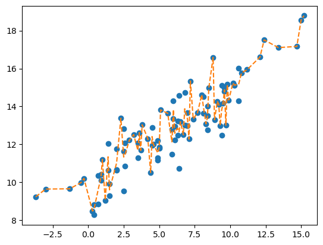
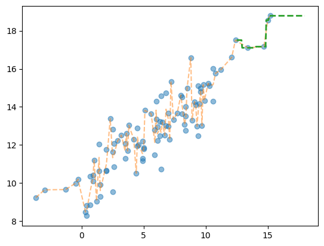
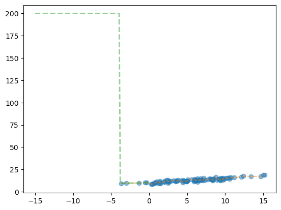

1. 강의영상
https://youtu.be/playlist?list=PLQqh36zP38-weIAPJ89acBOc2V3_0HMcX&si=Lqw2fusURrQqchzH
2. Imports
3. Data
np.random.seed(43052)
temp = pd.read_csv('https://raw.githubusercontent.com/guebin/DV2022/master/posts/temp.csv').iloc[:100,3].to_numpy()
temp.sort()
ice_sales = 10 + temp * 0.5 + np.random.randn(100)
ice_sales[0] = 200
df_train = pd.DataFrame({'temp':temp,'ice_sales':ice_sales})
df_train| temp | ice_sales | |
|---|---|---|
| 0 | -4.1 | 200.000000 |
| 1 | -3.7 | 9.234175 |
| 2 | -3.0 | 9.642778 |
| 3 | -1.3 | 9.657894 |
| 4 | -0.5 | 9.987787 |
| ... | ... | ... |
| 95 | 12.4 | 17.508688 |
| 96 | 13.4 | 17.105376 |
| 97 | 14.7 | 17.164930 |
| 98 | 15.0 | 18.555388 |
| 99 | 15.2 | 18.787014 |
100 rows × 2 columns
4. 분석
- 분석: 의사결정나무
# plt.plot(df_train.temp,df_train.ice_sales,'o')
# plt.plot(df_train.temp,df_train.ice_sales_hat,'--')
plt.plot(df_train.temp[1:],df_train.ice_sales[1:],'o')
plt.plot(df_train.temp[1:],df_train.ice_sales_hat[1:],'--')
- 12.5~18 구간사이의 unseen data를 가상으로 만들고 예측값을 살펴보자.
XX = df_test = pd.DataFrame({'temp': np.linspace(12.5, 18, 100)})
df_test['ice_sales_hat'] = predictr.predict(XX)
df_test| temp | ice_sales_hat | |
|---|---|---|
| 0 | 12.500000 | 17.508688 |
| 1 | 12.555556 | 17.508688 |
| 2 | 12.611111 | 17.508688 |
| 3 | 12.666667 | 17.508688 |
| 4 | 12.722222 | 17.508688 |
| ... | ... | ... |
| 95 | 17.777778 | 18.787014 |
| 96 | 17.833333 | 18.787014 |
| 97 | 17.888889 | 18.787014 |
| 98 | 17.944444 | 18.787014 |
| 99 | 18.000000 | 18.787014 |
100 rows × 2 columns
plt.plot(df_train.temp[1:],df_train.ice_sales[1:],'o',color='C0',alpha=0.5)
plt.plot(df_train.temp[1:],df_train.ice_sales_hat[1:],'--',color='C1',alpha=0.5)
plt.plot(df_test.temp,df_test.ice_sales_hat,'--',color='C2',linewidth=2)
- -15~0 구간사이의 unseen data를 가상으로 만들고 예측값을 살펴보자.
plt.plot(df_train.temp[1:],df_train.ice_sales[1:],'o',color='C0',alpha=0.5)
plt.plot(df_train.temp[1:],df_train.ice_sales_hat[1:],'--',color='C1',alpha=0.5)
plt.plot(df_test.temp,df_test.ice_sales_hat,'--',color='C2',alpha=0.5, linewidth=2)
- 뭐 이 데이터에서는 최선이지 않을까?
6. HW
- 없어요. 다른과목 중간고사 준비 잘하세요!